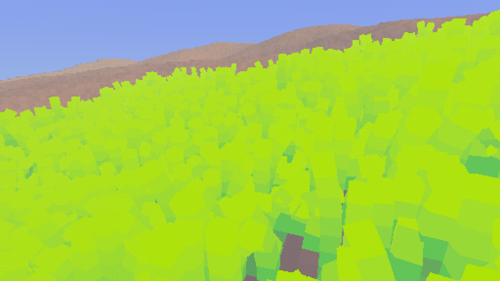
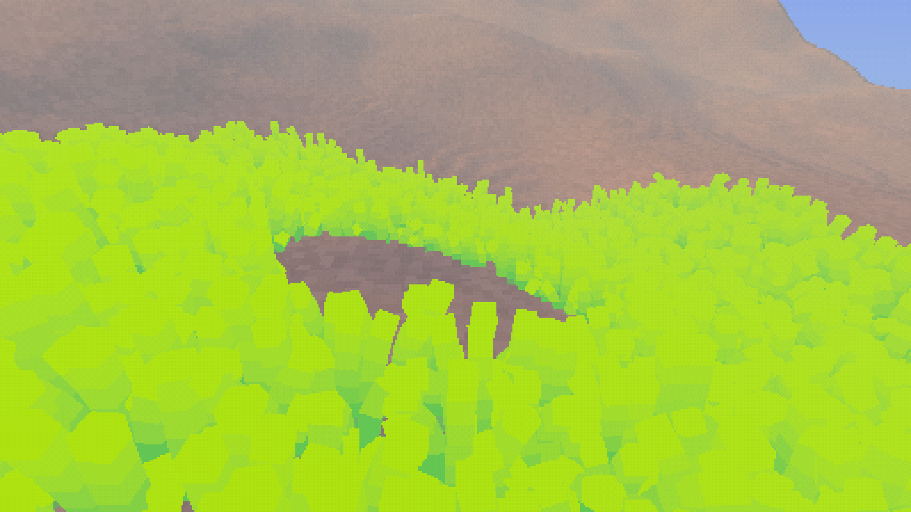

STEP 1 · e1870de6
短草只提交实际段数
短草 4 段不再按 8 段提交；长草、两个 LOD、成长裁剪与共享拓扑前缀保持不变。
4.76 → 3.65 ms
草绘制 GPU 均值 · 2880x1620 窗口 / 576x324 场景
同组帧率 49.73 → 52.49 FPS
step1 · 原始摘要按上一轮热点排序完成两步优化。世界仍为 4 × 2 × 4 块；不减少植物、不降低画质，不改变成长、水分或随机种子。
FPS · +19.2%
毫秒 / 帧
已完成帧槽检查 · 17 次运行
最终版本与两步优化前的相同大世界做顺序 ABBA 对照。帧率来自帧号与墙钟差，不是 GPU 时间的倒数。下表为各次运行统计量的等权平均；完整逐次结果在下方展开项。
| 观察量 | 修改前 | 修改后 |
|---|---|---|
| 帧率 / FPS | 52.29 | 62.33 |
| GPU 整帧 · 均值 | 14.16 ms | 11.06 ms |
| GPU 整帧 · 中位数 | 14.05 ms | 10.97 ms |
| GPU 整帧 · P95 | 14.90 ms | 11.79 ms |
| CPU 帧墙钟 · 中位数 | 17.62 ms | 14.73 ms |
| CPU 帧墙钟 · P95 | 33.75 ms | 30.77 ms |
| CPU 命令记录 · 均值 | 3.20 ms | 3.40 ms |
RTX 3060 Ti / i5-12600KF · NVIDIA 580.159.04 · MAILBOX · 1600x1000 窗口 / 320x200 场景，1 sample · player-default 镜头。每次加载完成后运行 28 秒，剔除前 8 秒；启动时间不计入结果。
短草 4 段不再按 8 段提交；长草、两个 LOD、成长裁剪与共享拓扑前缀保持不变。
草绘制 GPU 均值 · 2880x1620 窗口 / 576x324 场景
同组帧率 49.73 → 52.49 FPS
step1 · 原始摘要沿用原有分块粗筛、距离和 LOD 策略；在入选批次内逐株保守细筛。工作组压紧原始索引，光照和间接绘制使用同一份可见列表。
相对第一步后的同组测量 · 1600x1000 窗口 / 320x200 场景
step2 · 原始摘要| 独立 GPU 操作 | 第一步后 / ms | 第二步后 / ms |
|---|---|---|
| 草绘制 | 3.40 | 1.79 |
| 光照与姿态 | 3.25 | 2.04 |
| 可见列表 | 0.00 | 1.10 |
测量期间系统选择的最高评分显示器由 DP-2 变为 HDMI-1；历史第一步为 2880×1620，最终第二步与整体复测为 1600×1000。每组前后视口严格相同，不把显示器 / 分辨率变化计作优化收益，也不跨组相减。详细组使用 1024 个 query 容量，不能和普通组直接混算。这里没有重复加入 graphics.pass 等父 scope。缓冲区容量及光照 dispatch 的最大线程范围仍按原始批次预留；越过可见数量的线程立即返回，昂贵姿态与光照只计算保留实例。未声称显存容量同步下降。
逐帧原生审计在既有帧槽 fence 完成后检查间接计数、源索引范围与唯一性；关闭剔除的诊断参考保留原始顺序。15 对参考 / 候选截图的草轮廓掩码逐像素相同，含 8 个移动镜头与割草重种关键帧；这只是草专用几何诊断，不将时序相关光照差异冒充完整 RGB / 深度等价。
完整构建仍受原有 collision_bench_rapier.rs 的 fs / 类型推断错误阻断。主程序定向检查、测试、Release 构建与隐藏运行的具体结果见 validation.txt；未修改无关 benchmark。单机、单镜头性能证据不代表所有平台收益。


overall · 原始摘要 · 原生检查摘要 · 构建 / 同步 / 图像验收记录 · 证据 SHA256
node docs/evidence/world-frame-cost/run.mjs --before /path/to/baseline --after target/release/re-flora --out target/recheck --detailed node docs/evidence/grass-visible-workset/validate.mjs target/release/re-flora target/grass-validation slangc shader/tests/grass_visibility_envelope_test.slang -std 2025 -I shader/slang -target executable -o /tmp/grass-bounds /tmp/grass-bounds
配置复制到隔离目录，个人 config/gui.toml 哈希不变。普通组允许 query 溢出，只用于整帧指标；详细组严格 dropped=0。GPU/CPU 原始帧采样以 gzip 归档，原生日志与图像来源见 evidence README。
| Run | FPS | GPU 中位 / ms | CPU P95 / ms | 丢弃 scope |
|---|---|---|---|---|
| 0-before | 49.62 | 14.55 | 35.12 | 0 |
| 1-after | 52.39 | 13.45 | 34.20 | 0 |
| 2-after | 52.59 | 13.44 | 34.33 | 0 |
| 3-before | 49.85 | 14.57 | 34.85 | 0 |
| Run | FPS | GPU 中位 / ms | CPU P95 / ms | 丢弃 scope |
|---|---|---|---|---|
| 0-before | 56.34 | 12.46 | 32.49 | 0 |
| 1-after | 61.09 | 11.01 | 31.15 | 0 |
| 2-after | 60.86 | 10.98 | 31.37 | 0 |
| 3-before | 54.69 | 12.93 | 32.83 | 0 |
| Run | FPS | GPU 中位 / ms | CPU P95 / ms | 丢弃 scope |
|---|---|---|---|---|
| 0-before | 52.25 | 14.05 | 33.68 | 3 |
| 1-after | 62.35 | 10.97 | 30.85 | 4 |
| 2-after | 62.32 | 10.97 | 30.69 | 4 |
| 3-before | 52.33 | 14.04 | 33.82 | 3 |